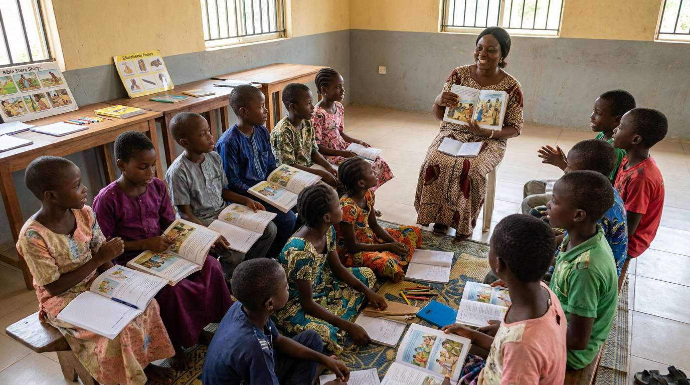

Bible Lessons
Age-appropriate engagement with Scripture and biblical principles.
Helping children discover God's Word, grow in faith, build healthy relationships and develop their gifts.
We introduce children to God's Word and help them develop a personal relationship with Jesus Christ from an early age.
Through Bible clubs, children's fellowships, rallies, holiday programmes, Bible lessons, songs, games, and interactive activities, we create a safe, welcoming, and engaging environment where children can learn biblical truths, develop godly character, and grow in their faith.
Our approach combines Bible teaching, worship, prayer, action songs, missionary stories, friendship, creative learning, and age-appropriate activities. Our goal is to create an environment where every child is valued, heard, loved, and encouraged to grow in their relationship with Christ.

Age-appropriate engagement with Scripture and biblical principles.
Safe spaces for friendship, worship, learning and participation.
Neighbourhood, Fellowship Group, and Primary/Nursery School Bible Clubs that disciple children through age-appropriate Bible teaching, engaging activities, and relevant Christian literature.
Fun ways to reinforce Scripture knowledge and curiosity.
Encouraging children to identify and responsibly develop their gifts.
Children outreaches, Morning devotions in Nursery/Primary schools, rallies, and other evangelistic programmes.
Your prayers, service, skills and resources can help create better experiences for children.